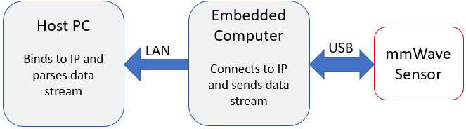

Stream Point Cloud Remotely
===========
This tool allows point cloud data from a mmWave sensor to be sent to an embedded computer over USB, and then again be transferred to another Host PC via LAN.
The concept is to place a mmWave sensor and suitable embedded computer in an inaccessible area.
Any embedded computer capable of running Python 3.7 (eg. Beaglebone Black, Raspberry Pi, Windows machine, etc.) can be used.
The mmWave sensor will send Out of Box data to this embedded computer over USB, then Python scripts will be used to communicate the data to another host PC or server.
See the below image as an example of this application.

Hardware and Software Requirements
-----------
### Hardware
Item | Details
--------------------------|-----------------
TI mmWave EVM | Any TI mmWave EVM supported by mmWave SDK 3.5 (eg. 64xx, 68xx, 18xx, 16xx)
Embedded Computer | Single board computer capable of running Python 3.7 (eg. Beaglebone Black, Raspberry Pi, etc.) with USB and ethernet
Host Computer | Computer or machine connected to same LAN as embedded computer
Micro USB Cable | Used to connect mmWave EVM to Embedded Computer
Power Supply | Any power supply neccessary to power the Embedded Computer
### Software
Tool | Version | Download Link
----------------------------|---------------------------|--------
TI mmWave SDK | 3.5.x.x | [Link to Latest mmWave SDK](http://software-dl.ti.com/ra-processors/esd/MMWAVE-SDK/latest/index_FDS.html) To access a previous version of the mmWave SDK scroll to the bottom of the table and click the link under "MMWAVE-SDK previous release". Repeat to continue stepping back to previous versions.
mmWave Industrial Toolbox | Latest | Download and install the toolbox. Go to [Using TI Resource Explorer & the mmWave Industrial Toolbox](../../../docs/readme.html) for instructions.
Uniflash | Latest | Uniflash tool is used for flashing TI mmWave Radar devices. [Download offline tool](http://www.ti.com/tool/UNIFLASH) or use the [Cloud version](https://dev.ti.com/uniflash/#!/)
Quickstart
===========
The mmWave Evaluation Module (EVM), must be flashed with the Out of Box Demo.
For information on how to flash the sensor, please find the “Industrial Toolbox” under the “mmWave Sensors” folder located at https://dev.ti.com/tirex/.
This tool is compatible with devices supported under mmWave SDK 3.5, such as 16xx, 18xx, and 68xx.
Included are two Python scripts: client.py and server.py.
Server.py is intended to be run on the computer connected to the mmWave sensor, while client.py is run on the host PC or remote server.
Server.py will send the chirp configuration to the sensor as specified in a .cfg file. In this tool, a 6843_2d.cfg has been provided.
Client.py will receive and parse the data. It will also save the point cloud data to a newly created csv file. Sensor statistics will be printed to the terminal. There is a setup process before running.
The python package pySerial is a dependency. It can be installed via pip: `pip install pyserial`.
### Server.py
Instructions for setting up server.py:
1. The files server.py and 6843_2d.cfg should be placed in a directory on the embedded computer.
* If the embedded computer is in a difficult to reach area, using tools like `ssh` and `scp` may be helpful.
* SSH manual: https://linux.die.net/man/1/ssh
* SCP manual: https://linux.die.net/man/1/scp
2. Should another cfg file be used, the filename must be specified in field 'radarCfgFile'.
3. The IP address and port of the host must be specified in fields 'HOST' and 'PORT'.
4. The serial port of the sensor must also be specified. Note the two ports of the sensor. The CFG port must be specified on line 40, while the DATA port is specified on line 41. For windows machines, the port must be written as ‘COMx’. For linux machines, the port will typically be ‘/dev/ttyACMx’ or ‘/dev/ttyUSBx’.
### Client.py
Instructions for setting up client.py:
1. Client.py should be placed in a directory on the host machine.
2. Client.py must specify the same IP address and port that is also in server.py in fields 'HOST' and 'PORT'.
### Execution
To execute the scripts, client.py must be executed first on the host machine. Only then can server.py be executed on the remote machine. More explicitly:
1. On machine receiving data stream, in a console run `python client.py`
2. On embedded computer connected to mmWave EVM, in a console run `python server.py`
Using Ctrl+c on either the client or server will stop both programs from running.
After stopping, the host machine now has a csv with point cloud data.
[[y! Not all TI mmWave data is compatible
The scripts do not handle heatmaps or profiles, therefore it is not expected that the sensor will be sending this information.
The guiMonitor command in the .cfg must be set to the following: ‘guiMonitor -1 1 0 0 0 0 1’.
Furthermore, this tool is only compatible with the out of box demo. Other demos such as Area Scanner or People Counting are NOT supported.
]]
Need More Help?
===========
* Additional resources in the documentation of the mmWave SDK (note hyperlinks will only work if the mmWave SDK has been installed on PC):
* [mmWave SDK User's Guide located at `<mmwave_sdk_install_dir>/docs/mmwave_sdk_user_guide.pdf`](http://software-dl.ti.com/ra-processors/esd/MMWAVE-SDK/latest/exports/mmwave_sdk_user_guide.pdf)
* [mmWave SDK Release Notes located at `<mmwave_sdk_install_dir>/docs/mmwave_sdk_release_notes.pdf`](http://software-dl.ti.com/ra-processors/esd/MMWAVE-SDK/latest/exports/mmwave_sdk_release_notes.pdf)
* Parsing Script Information for mmWave Demo Visualizer
* `<MMWAVE_SDK_INTSALL_DIR>\docs\mmwave_sdk_user_guide.pdf`
* Search for your issue or post a new question on the [mmWave E2E forum](https://e2e.ti.com/support/sensor/mmwave_sensors/f/1023)